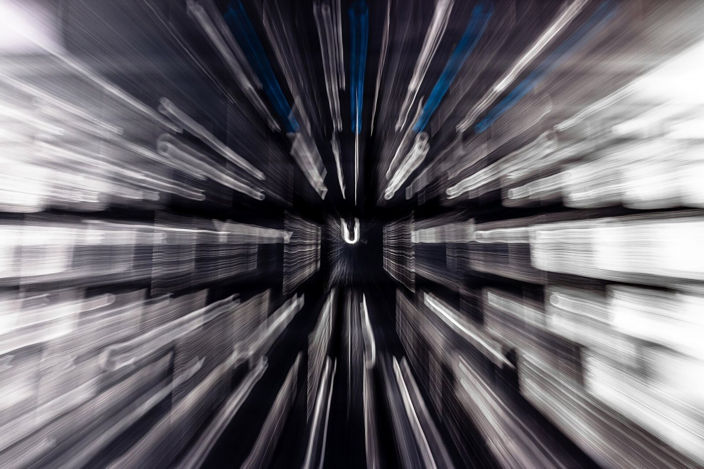

Как поднять FPS без покупки нового железа

Прежде чем менять видеокарту, проверьте настройки: часто +20–30% к FPS даётся бесплатно. Вот что реально работает.
Что делает апгрейд дорогим
- Выключенный XMP/DOCP — ОЗУ работает на 2133 МГц вместо 3200+.
- Вертикальная синхронизация в играх с сильным инпутом.
- Фоновый софт: браузер с 30 вкладками, Discord с оверлеем, запись экрана.
Порядок действий
- Включите XMP/DOCP в BIOS — память заработает на своей частоте.
- Уберите V-Sync, если монитор без G-Sync/FreeSync — или включите FreeSync и ограничьте FPS.
- Закройте фоновые приложения — особенно запись геймплея и браузер.
- Обновите драйвер видеокарты и включите «игровой режим» Windows.
Настройки в самой игре
- Снизьте «качество теней» и «отражения» — они жрут больше всего.
- DLSS/FSR в режиме «Качество» почти не портит картинку, но сильно поднимает FPS.
- Дальность прорисовки — на среднее.
Вывод
XMP + отключение V-Sync + DLSS дают больше прироста, чем апгрейд с 4060 на 4060 Ti. Сделайте это первым делом.
Проверяйте FPS счётчиком (MSI Afterburner / встроенный) до и после — так видно, что именно помогло.
Проверьте актуальные цены
Ссылки на маркетплейсы и сервисы ведут на проверенные предложения, для вас цена не меняется.
Найти на Маркете →